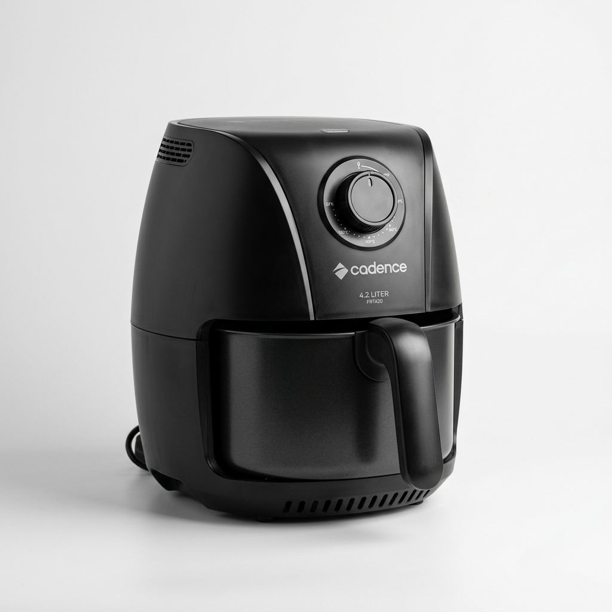
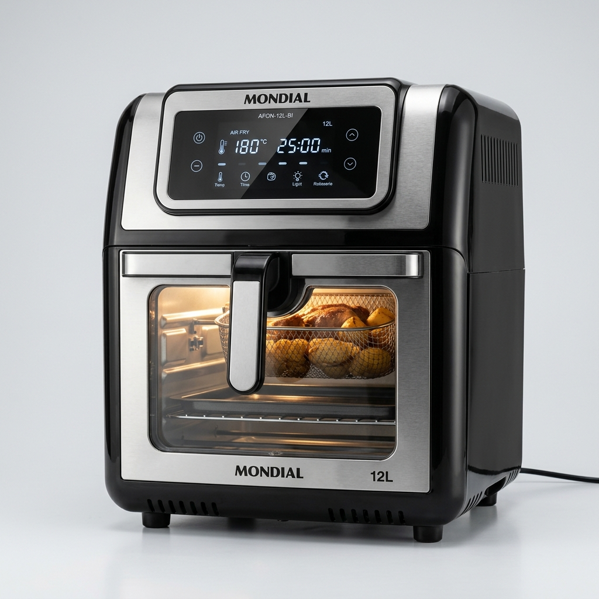

Resposta Rápida: O teflon da Air Fryer faz mal à saúde e solta toxinas? Não, desde que você compre modelos de marcas certificadas. Fritadeiras muito baratas e sem homologação costumam usar pintura frágil que descasca em altas temperaturas, podendo liberar compostos tóxicos (como o PFOA). Para garantir 100% de segurança, invista em marcas consolidadas no Brasil (como Mondial e Britânia), que possuem cestos com antiaderente atóxico aprovado pelo Inmetro.
Decisão Rápida: Os 3 Modelos Mais Seguros e Duráveis
Sem tempo para ler todo o artigo técnico? Cruzamos as avaliações de durabilidade do cesto e elegemos as 3 melhores escolhas de 2026:
Mondial AFON-12L-BI (12L)
Formato forno com cesto antiaderente Duraflon e prateleiras em inox. O teflon não descasca e assa porções grandes de uma só vez sem grudar.
Ver Oferta na Shopee Menor Preço + Frete GrátisBritânia BFR21P Air Flow (4L)
Cesto com revestimento antiaderente reforçado Ultra Resistente, tamanho ideal para famílias de 2 a 4 pessoas e limpeza fácil no dia a dia.
Ver Oferta na Shopee Vendedor Oficial IndicadoMondial AF35BF (3,5L)
A opção confiável mais acessível do mercado. Antiaderente certificado pelo Inmetro com preço frequentemente abaixo de R$ 200.
Ver Oferta na Shopee Preço Promocional AtivoA promessa da Air Fryer é linda: saúde, praticidade e nada de óleo. Mas e se o material de onde a sua comida sai, a 200 graus celsius, estiver liberando toxinas silenciosas no seu prato todos os dias?
Com a explosão de popularidade das fritadeiras sem óleo, o mercado foi inundado por marcas importadas de procedência duvidosa com preços extremamente baixos. O problema não é o preço, é do que elas são feitas.
O Pesadelo do Teflon Descascando
Você já notou pintinhas pretas grudadas na sua batata frita ou no frango? Isso é o revestimento antiaderente de baixa qualidade descascando devido à temperatura contínua e à falta de aderência molecular na fábrica.

A polêmica do PTFE e PFOA
Revestimentos antiaderentes antigos e não regulamentados utilizavam compostos químicos (como o PFOA) que, quando superaquecidos ou quando arranhados, podem liberar gases e partículas no alimento. Marcas baratas que não passam por testes rigorosos de segurança alimentar costumam utilizar a forma mais barata (e frágil) de pintura para a cesta.
Além do risco à saúde, a praticidade da Air Fryer vai por água abaixo: em menos de 2 meses, tudo começa a grudar no fundo, e lavá-la se torna o mesmo sacrifício de lavar uma forma cheia de óleo no fogão tradicional.
O que observar antes de comprar (Análise Prática)
Durante a nossa avaliação dos materiais das fritadeiras elétricas vendidas no Brasil, identificamos pontos indispensáveis para você não errar na compra:
O que garante segurança:
- Cesto com certificação Inmetro livre de toxinas PFOA.
- Camada antiaderente com cura térmica de fábrica (não solta na primeira lavagem).
- Cestos com grelha removível de fácil higienização ou prateleiras em inox.
Cuidados indispensáveis:
- NUNCA use o lado verde da esponja ou palha de aço na limpeza.
- Evite marcas genéricas importadas sem selo do Inmetro e sem assistência nacional.
- Fazer a cura inicial do cesto com óleo antes do primeiro uso é fundamental para aumentar a vida útil.

Veredito: Vale a pena comprar uma Air Fryer em 2026?
Sim, com certeza! O segredo está em fugir dos modelos descartáveis de marcas desconhecidas que descascam em 30 dias. Optando por marcas consolidadas com antiaderente certificado como a Mondial e a Britânia, você ganha rapidez, economia de energia e protege a saúde da sua família.